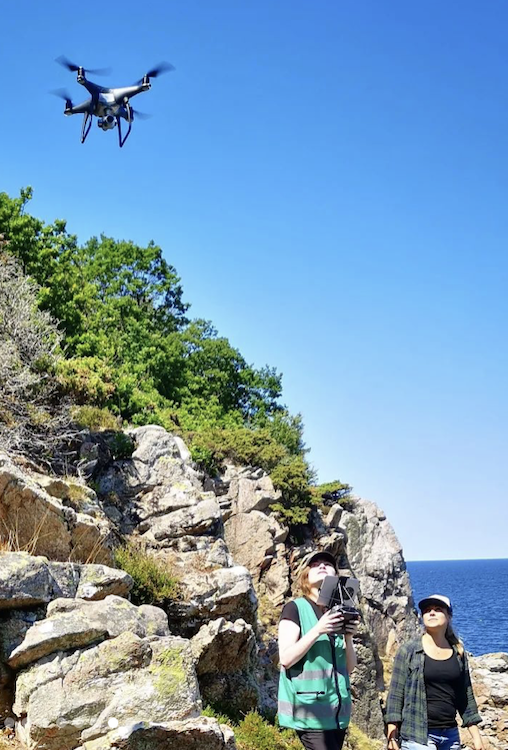
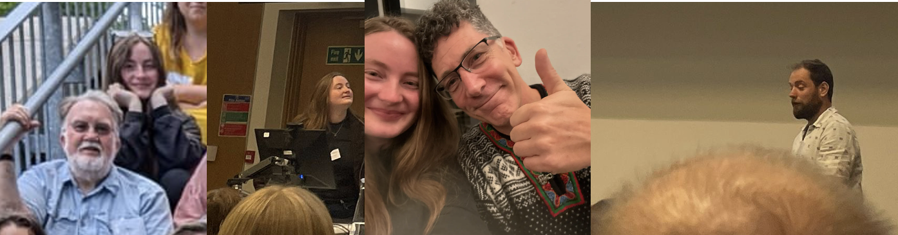

Dinah J. Hartmann
djh38@st-andrews.ac.uk – dh2000@gmx.net – 22/05/2000
Marine biologist and ecological statistician with background and/or training in biology, conservation, computation, bioacoustics and ecological statistics. PhD student researching harbour porpoise density using passive acoustic monitoring, animal tag and visual data, computational tools and ecological statistics.

Education
University of St Andrews, St Andrews, Scotland 2024–2028
PhD in Statistics
Project: Estimating spatial and temporal patterns in density of harbour porpoises in the North Sea using datasets from passive acoustic ocean observation networks with data flow to EU Digital Twin Ocean database.
Lund University, Lund, Sweden 2022–2024
Master of Science in Biology, Conservation Biology, 120 Credits, VG (distinction)
Relevant courses such as “Global Ecosystem Dynamics”, “Population and Community Ecology”, “Conservation Biology” and “Biological Monitoring”
60-credit MSc thesis on the density of harbour porpoises (Phocoena phocoena) using drones
University College Dublin, Dublin, Ireland 2018–2022
Bachelor of Science in Environmental Biology, 240 Credits, GPA 3.81 (First-class honours)
Relevant courses such as “Ornithology”, “Animal Behaviour”, “Conservation of Biodiversity”, “Working with Biological Data”, “Population Genetics”, “Wildlife Conservation and Fisheries Management”, “Diversity of Vertebrates”, “Evolutionary Biology” and “Wildlife Habitat Modelling”
Research
Center for Research into Ecological and Environmental Modelling, University of St Andrews, St Andrews, Scotland 2024–2028
PhD thesis advised by Len Thomas, Peter Tyack and Jamie Macaulay: Processing and analysing acoustic and movement tag data in PAMGuard and MATLAB to determine the probability of detecting harbour porpoise echolocation clicks on click detectors.

Department of Biology, Lund University, Lund, Sweden 2023–2024
Master of Science thesis advised by Per Carlsson and Johanna Stedt: Extensive field-work and drone-piloting experience, including focal follows of animals, programming drone paths and analysing the data in, e.g., DroneVideoMeasure, R and Excel.
Research assistance position: Supervising students in the field and independently collecting drone focal follow data of harbour porpoises.
School of Biology and Environmental Science, University College Dublin, Dublin, Ireland 2022
Bachelor of Science thesis advised by Tancredi Caruso on the effects of drought on soil biodiversity: Ecological laboratory work to determine soil biodiversity, extracting and preserving biota, analysing them under microscopes.
Teaching & Outreach
School of Mathematics and Statistics, University of St Andrews, St Andrews, Scotland 2025–2028
MT2508 Statistical Inference: Lead demonstrator for statistical programming in R, provided R statistics and programming support to students.
MT2508 Statistical Inference: Tutor in statistics, Prepared and held small group tutorials, marked assignments and gave feedback.
Department of Biology, Lund University, Lund, Sweden 2023–2024
Teaching drone methodology (piloting, safety, marine mammal focal follows and flight path programming) to Master’s students.
TV-documentary segment on harbour porpoise drone research on ARTE (“Night Trains – Von Berlin nach Stockholm”)
Full Documentary |
Feature in Sveriges Natur, the biggest Swedish nature magazine (“Kampen för att rädda tumlaren”)
Link | PDF
Smaller newspaper articles:
tidningensyre (“Snärjs i fisknät – kan tumlarna räddas från dödsdansen?”)
Link | PDF
Helsingborg Dagblad (“Barndomens kärlek till Sveriges enda val blev hennes karriär”)
Link
Seal Conservancy Norden-Norddeich, Norden, Germany 2021
Voluntary work in environmental education and outreach: Insights into seal conservation and monitoring, public outreach talks, teaching museum visitors in seal conservancy work via small talks and personal interactions.
Private Tutoring in Mathematics and French, Essen, Germany 2016–2018
Prepared students for A-level Mathematics and French in independently organised lessons.
Secondary school Maria-Wächtler-Gymnasium, Essen, Germany 2016–2017
Tutoring programme for children from refugee areas.
Secondary school Maria-Wächtler-Gymnasium, Essen, Germany 2016
Internship as teacher.
Publications
Hartmann, D., Palmqvist, V. and Stedt, J. (2026), Programmed unmanned aerial vehicles show great potential for monitoring marine megafauna in specific areas of interest. Remote Sens Ecol Conserv. DOI
Talks & Posters
Hartmann, D., Macaulay, J. D. J., Tyack, P., Rojano-Doñate, L., Teglberg-Madsen, P., Teilmann, J., Siebert, U. & Thomas, L. (January 2026). The probability of detecting harbour porpoise echolocation clicks. [Invited Talk]. Aarhus University Ecoscience Group, Roskilde, Denmark.
Hartmann, D., Macaulay, J. D. J., Tyack, P., Rojano-Doñate, L., Teglberg-Madsen, P., Teilmann, J., Siebert, U. & Thomas, L. (November 2025). The probability of detecting harbour porpoise echolocation clicks. [Invited talk]. Marine Alliance for Science and Technology Scotland, Glasgow, Scotland.
Hartmann, D., Macaulay, J. D. J., Tyack, P., Rojano-Doñate, L., Teglberg-Madsen, P., Teilmann, J., Siebert, U. & Thomas, L. (October 2025). The probability of detecting harbour porpoise echolocation clicks. [Invited talk]. Scottish Oceans Institute, St Adnrews, Scotland.
Hartmann, D., Macaulay, J. D. J., Tyack, P., Rojano-Doñate, L., Teglberg-Madsen, P., Teilmann, J., Siebert, U. & Thomas, L. (September 2025). The probability of detecting harbour porpoise echolocation clicks. [Poster]. International Bioacoustics Congress, Kerteminde, Denmark.
Hartmann, D., Macaulay, J. D. J., Tyack, P., Rojano-Doñate, L., Teglberg-Madsen, P., Teilmann, J., Siebert, U. & Thomas, L. (September 2025). The probability of detecting harbour porpoise echolocation clicks. [Invited Talk]. Aarhus University Bioacoustics Group, Aarhus, Denmark.
Hartmann, D., Palmqvist, V. & Stedt, J. (May 2025). En route to standardisation: Porpoise monitoring using a programmed UAV. [Poster]. European Cetacean Society 36th conference, Ponta Delgada, Azores, Portugal.
Hartmann, D., Macaulay, J. D. J., Tyack, P., & Thomas, L. (January 2025). Harbour porpoise click detection. [Poster]. UK and Ireland regional student chapter for marine mammology student conference, St Andrews, Scotland.
Hartmann, D., Stedt, J., & Carlsson, P. (March 2024). Spatio-temporal distribution of harbour porpoises around Kullaberg nature reserve. [Invited Talk]. Danish Marine Mammal Society Symposium, Denmark.
Awards, Grants & Scholarships
Doctoral studentship, EU funded as part of the DTO-Bioflow project (~£120,000) 2024–2028
Environmental Biology Medal for highest overall Bachelor’s GPA 2022
Environmental Biology Stage 4 Scholarship for highest class GPA (€1,000) 2021
Skills & Trainings
Scottish Mathematical Sciences Training Centre 2024–2025
Modern Regression and Simulation methods and Bayesian statistics
University of Oxford, Oxford, England December 2024
Academy for PhD training in statistics (Statistical Inference and computing)
University of New Hampshire, Durham, USA June 2024
SeaBASS summer school in bioacoustics
Computing, quantitative: R, RStan, MATLAB, ArcGIS Pro, QGIS, PAMGuard, Raven, SPSS
Other research skills: A1-A3 Drone License, drone piloting and programming, LaTeX/Overleaf, Microsoft Office applications
Languages: German (native), French, Spanish
Laboratory skills: soil drying, extraction of biota, microscopes, DNA extraction